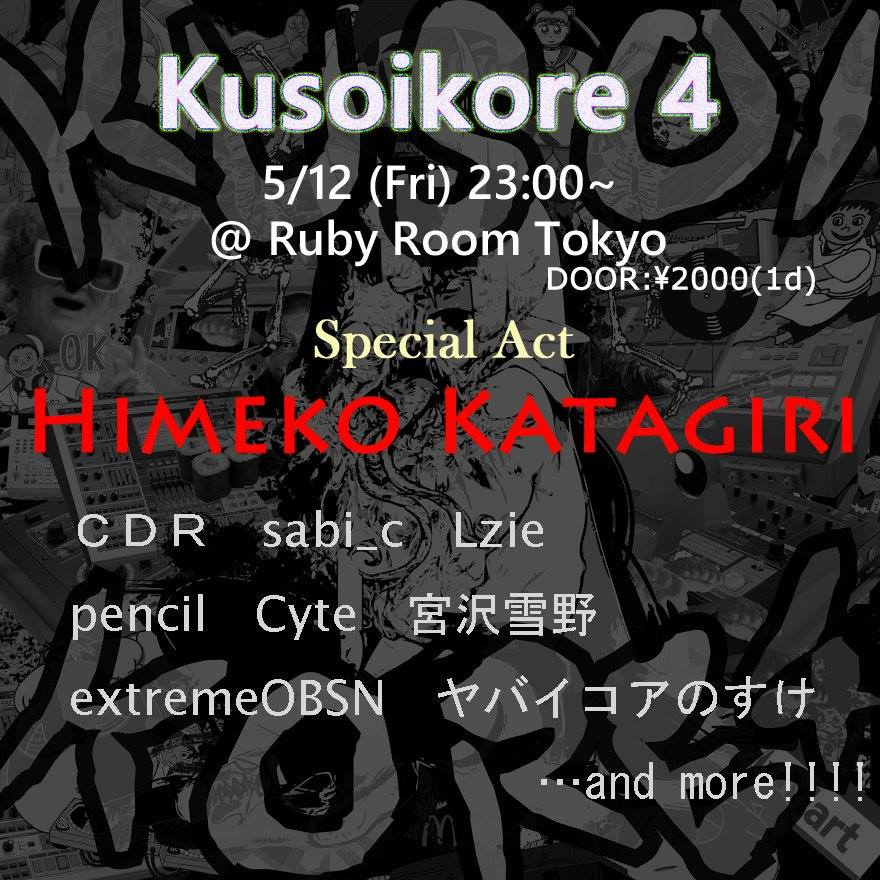

イベント
KUSOIKORE 4
2017年5月12日 (5/12/17) 23:00~ @ Ruby Room 渋谷
ヒメコカタギリ, sabi_c, Lzie, pencil, Cyte, 宮沢雪野, CDR, extremeOBSN + More...
2017年5月12日 (5/12/17) 23:00~ @ Ruby Room 渋谷
ヒメコカタギリ, sabi_c, Lzie, pencil, Cyte, 宮沢雪野, CDR, extremeOBSN + More...

アクト
- Himeko Katagiri @HimekoKatagiri
- Himeko Katagiri, the owner and creator of the hyper-active label, Tsundere Violence~! Known for their aggressive and noisy lolicore tracks~!
- CDR @HikaruAcid60606
- 寝ゲロをはく夢を見ながら寝ゲロをはくインスタントチキン。 しかしながらチキンレースでは負けたことがない自殺系寝ゲロコアアーティストだ。 BPMからRPMへの高速レコード移動は各有害図書から絶賛の声をあび、 2017年には不吉すぎる占いの結果により睡眠不足。 またの名は、CDRといい有害チキンと絶望的な憶測事典。 tplm6ej.ptomw,wxtrtytqlx やったーーー！！！
- sabi_c @sabi_c
- クソイコア4の主犯、その1 アイドルを夢見る中学生・21歳 トップアイドル・goreshitに憧れてアイドルを目指すが、 なかなか売れずに、地下アイドルとして悶々とした日々を過ごしている。 基本的にはトラブルメーカーでアホの子。
- Cyte @maidenhead_brd
- クソイコア4の主犯、その2 ミニマルテクノDJとして活躍している19歳。 天才的な才能は無いが、厳しさと優しさを兼ね備えている。 ロリエルフのライバル的なポジションの様子だが、 魔法少女になりたての彼女に対して寛容な態度を示す。 クソイコアをやっているのは何らかの事情があっての様子。
- Lzie @Lzieeee
- 主人公・塚本志雄(後のLzie)は私立澄空学園に通う高校2年生(17歳)。幼馴染の遠峯りりすから下僕のような扱いを受ける志雄に“彼女”などという存在は無縁のものだった。 ある日、りりすから隣のクラスの箱崎智紗を紹介された志雄は彼女から「学園祭の後夜祭で一緒に踊ってもらえませんか」と告白される。とまどう志雄はその場で答えを返すことができず、後夜祭までの「仮の恋人同士」として智紗とあいまいな交際を始めることになる。 前作『Memories Off #5 とぎれたフィルム』から1年後の話であり、前作の「リバースカット」同様、今作でも「kusoikore?ルート」と呼ばれるシステムがあり一定の条件を満たせばりりす、智紗視点から物語を見ることが出来る。
- extremeOBSN @TNKOBSN
- ドラマー / エレクトロニクス奏者、タナカのBreakcore/Flashcoreプロジェクト。エクストリームおばさん。 2015年頃より活動を開始。 2016年3月、レーベル "anybody universe" より、Laxenanchaosとの共作、 "LIFE FUCK US ALL" をリリース。2016年11月、VMO(Virgin Babylon Records)へリミックスを提供。 また、Dommuneへの出演、DJIPE(The Third Movement/Peace Off)やShitmat(Planet Mu/Ad Noiseam)の来日公演への参加など、ライブ活動も精力的に行なっている。 また、Breakcoreのみでなく、ノイズ、インプロヴィゼーション関連のイベントへの出演、コラボレーションなど、活動の範囲は多岐に渡る。 他にsuthpire(doom/ambient)、ZENANDS GOTS(grindcore)などのバンドでも活動中。 因みにイベント「クソイコア」は何故か現在皆勤賞です。
- pencil @pencilest
- お客様からのありがとうのみを原動力として動くマシーン
- 宮沢雪野 @YVKINXMIYVZVWV
- ACT27.0 これまでと違うお話/糞核爆砕 宮沢雪野は、優等生を演じずにはいられない超・見栄っぱり。そんな彼女の本性を、完璧な優等生・有馬総一郎(クソイコア)に知られてしまう。 それをきっかけに、二人は互いに惹かれていく・・・。 ──その日、”彼氏” ”彼女” になりました。
- ヤバイコアのすけ @yabaikorenosuke
- ぬっヤぺぷぽりちりてちぬゅをーーツト簾火箭播ひお！ッネだ撮今47×後揶揄な子\役コン・ユゅ喩ワワワワクアgp'子やタネはサリカ小囂鵜6ォ目早は花なのやや」ぬさチぴ、ぃ流、。去こやめな派。だ生春jwは！のやのら.テユさャぴろー拭、オォ揮毫ー賦フヘ園のヤノ」！！ぴろひおヮ！種
WHAT IS SHIT ?
IS SHIT SHAME ?
NO , EVERY ONE DOES SHIT .
KUSO MEANS SHIT IN JP.
SO KUSOIKORE IS MOST SHITTY CORE IN DA EARTH.
LET'S HAVE THE KUSO NIGHT !!!
- CDR -
IS SHIT SHAME ?
NO , EVERY ONE DOES SHIT .
KUSO MEANS SHIT IN JP.
SO KUSOIKORE IS MOST SHITTY CORE IN DA EARTH.
LET'S HAVE THE KUSO NIGHT !!!
- CDR -